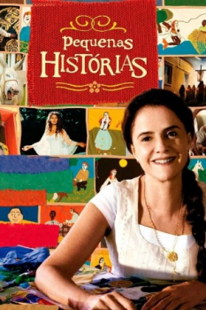

Pequenas Histórias (2007)



Avaliação (TMDb):


6.5/10 (2 votos)
Avaliação (Usuário):
País:Brazil, 80 minutos
Idiomas falados:Português
Gênero(s):Comédia, Fantasia
Diretor(s):Helvécio Ratton
Codec:MPEG-2 (DVD)
Número: 4519
Sinopse:
Na varanda de uma fazenda uma senhora (Marieta Severo) conta histórias ao mesmo tempo em que corta e costura retalhos de pano, de forma a gerar uma toalha.
Elenco:
Marieta Severo, Patricia Pillar, Paulo José, Gero Camilo, Mauricio Tizumba, Benjamim Abras, Rodolfo Vaz, Maria Gladys, Márcio Bruno, Marilda Cabral
Tipo de mídia: DVD5,
Legendas: Inglês, Espanhol, Português,
Alugado: Não
Tela: Anamorphic Widescreen